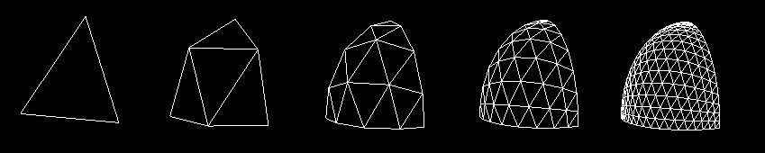
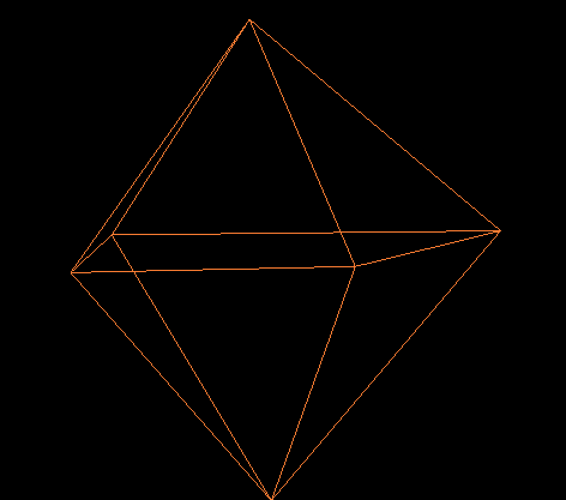
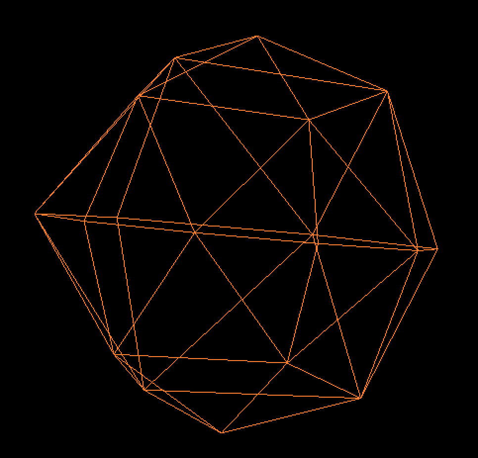
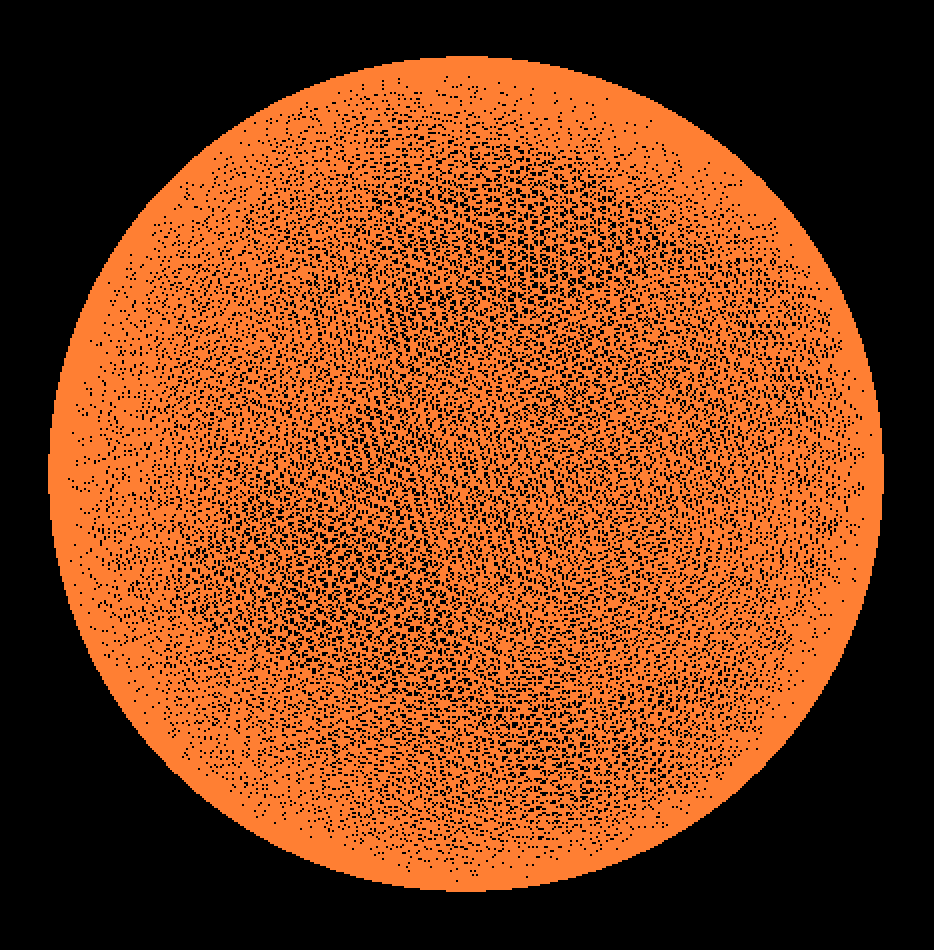
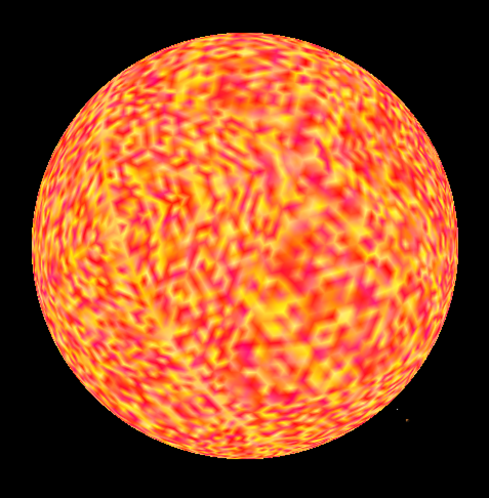
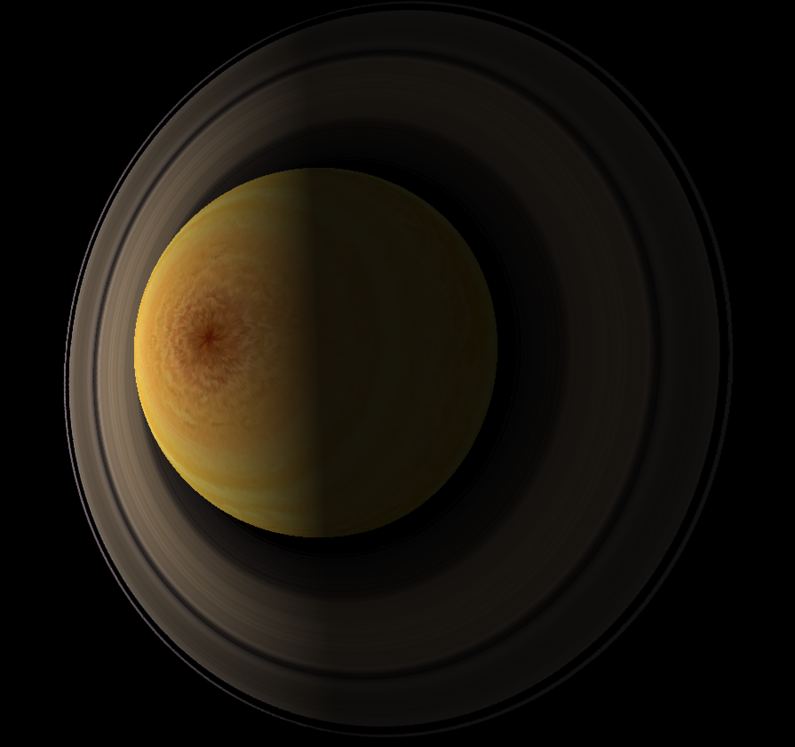
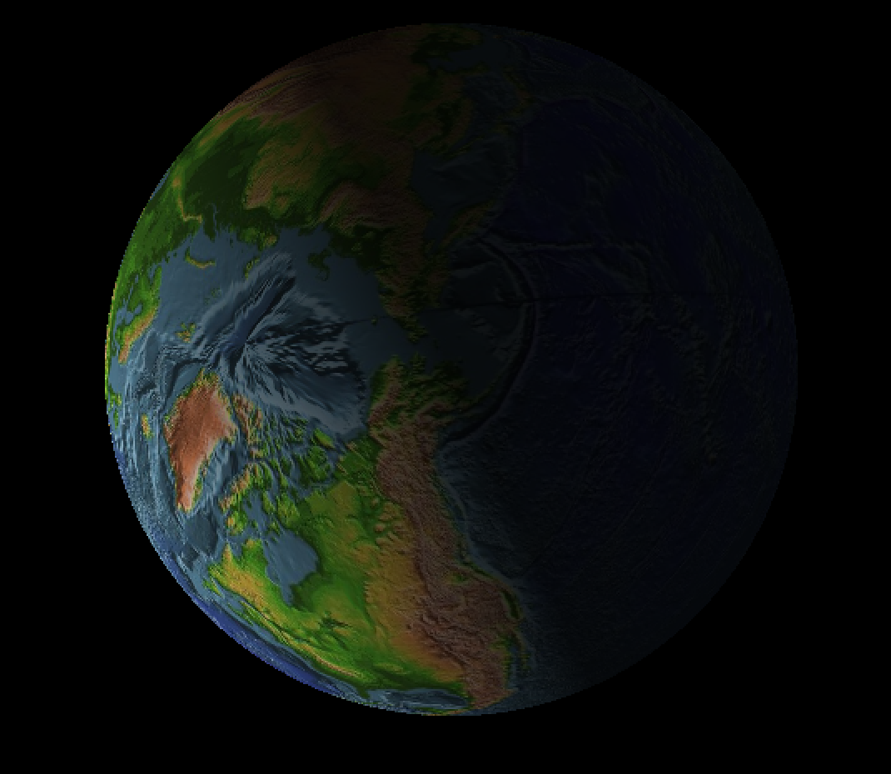
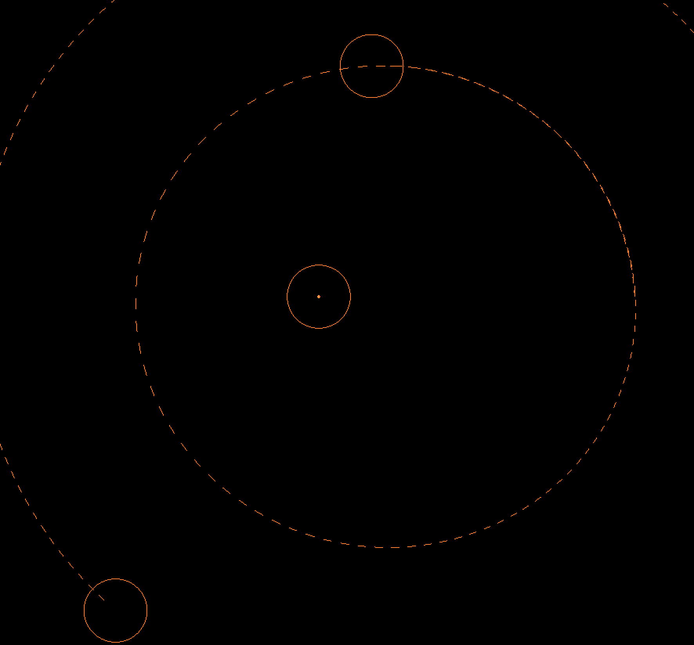
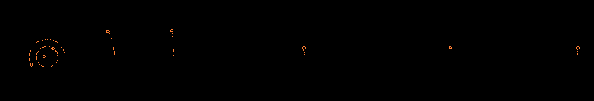
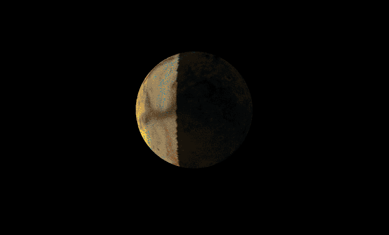

I made a fully visualized and animated simulation of the Solar System. At present it only includes all of the major planetary objects in the solar system. Future iterations will hopefully include all of the moons as well as the asteroid belts and known comets. This simulation also includes limited interactivity in the form of close up views of the planets and a rudimentary fly by of the solar system from Pluto to the Sun.
The first thing I needed to do was learn how modern openGL draws things to the screen. Using various tutorials and the openGL documentation I learned that to draw something to the screen I needed to create an array that includes all of the vertecies of the triangles as well as the texture coordinates for those vertecies. This is a big change from older openGL using tools like glut, where you could calculate and draw points on the fly. Modern openGL is also very much more low level than older openGL, in that I have to pass data to the openGL directly as well as all at once. This required me to pre-calculate all the points in the models that I needed before sending their data to openGL. For some things, such as the orbital lines, this was easy, just send in the array I was using to hold the data points. For other things, such as sphere and circle generation, I needed to precompute all the points I needed first.
To create the spheres that will be the base model for the planets I used a simple to understand subdivision technique. For this technique you first create a unit octohedron consisting of six vertecies that create eight triangle faces. You then take each triangle face and divide it into four triangle faces by creating a vertex at the midpoint of each triangle side. Then you take these new vertecies and push them out until they are also at unit length away from the center of the sphere in progress. For my spheres I used a total of six subdivisions.
|

|
The next thing I did was impliment the drawing of 2d circles around the planets for better visualization at super far zoom values. To do this I modified an implimentation that I found here. Basically the algorithim uses a little bit of trigonometry to create a series of vertecies that will aproximate a circle. Taking the initial radial vector (the vector from the center of the circle to the edge) it finds the initial point to start at (the one that is radius away from the center on the x axis). Then it finds the vector that is tangent to the initial vector and scales it down to the correct length by multiplying it by the tangent of the angle between radial vectors. Then it is added to the initial radial vector to get the next radial vector. But this vector is too long, so it is scaled by the cosine of the angle between radial vectors. This gives the next vertex in the circle approximation as well as the next starting radial vector. Continuing this process num_segments times gives a nice circle approximation, if num_segments is large enough.
Now that I had a sphere with a circle around it, I needed to make it rotate on its axis, place it in the proper starting location, and tilt it to the correct orientation. To do this I created a variable to store its current location in world space and its radius. I then created a model transformation matrix for each sphere that consisted of a scale by the radius, a rotation based on time, a rotation to tilt the spheres axis, and finally a translation to the point in world space. For the outlining 2d circles I only performed the translation and scale. This is done for each frame as all of the objects are created at the origin and are unit length in size.
The only thing left to animate at this point is the actual gravitational movement of the planets. This is done by updating the variable that contains the planets current location via the gravitational update function. The gravitational update function uses the vector form of Newtons Universal Law of Gravitation shown here:
F12 = -G * ((m1 * m2) / ((r2 - r1) ^ 2)) * r12_unit
G = 6.6741×10−11 N⋅m^2/kg^2
m = mass of object in kg
r = position of object in m
r12_unit = direction vector of object 1 to object 2
Using this equation I update each planets position (excluding the sun). I do this by applying and summing up the force (F12) that each planet exerts on a target planet to get an acceleration vector. Multiplying this vector by a time produces a velocity vector. This velocity vector is then added to the initial velocity vector of the planet, giving a new velocity (aka direction and distance). Once all of the planets' velocity vectors have been updated I add the velocity to the cerrent position of the planet to move it to the correct place. This function is called once every frame to accurately simulate the movement of the planets.
Now the planets are fully simulated, it's time to add the bells and whistles. I added dashed lines to the scene to show where the planets have been and to show what their orbits look like in real time. To do this I made an array for each planet to hold its previous positions every thirty frames. This array I render seperately as the vertecies are already in world space and they don't require any texture mapping (I render the outlining circles in teh same manner). The approach I used to do this was to allocate space in openGL first and then use glBufferSubData function to update the openGL buffer on every render. In retrospect this approach seems needlessly complicated and limited, however it does have the benefit of not using up all of my computers memory during longer simulations.
To make the planets look like planets I applied texture maps to them. OpenGL has a nifty function that will create a mipmap directly from an input image, thus all the textures applied are interpolated depending on the distance from the camera. The hard part comes when I tried to map points from teh sphere onto a 2d texture. To do this I calculate the polar coordinates from the cartesian coordinates on the sphere in the shader. By dividing the theta angle by two PI and the phi angle by PI, then adding 0.5 I get a normalized coordinate for u and v in the texture space. Calculating the uv coordinates in the shader helps alliviate the seam that happens when mapping a 2d texture to a 3d object.
Lastly I wanted to make the camera fly by each of the planets. To do this I used the glm function lookAt to make the camera look at a particular planets center position. I then updated the position of the camera by 1/60th of the distance to the planet that the camera is looking at. Once the camera gets to a certain distance from the planet I slow down the camera until it got to the planet. After that the camera looks at the next planet down the line and starts moving towards that planet.
Here are images of the sphere creation process, along with a chosen few textures applied to them to create the planets.
|

|

|
|

|

|
|

|

|
|

|

|
|

|
NASA/JPL solar system simulator
An Efficient Way to Draw Approximate Circles in OpenGL
Improvements to the canonical one-liner GLSL rand() for OpenGL ES 2.0